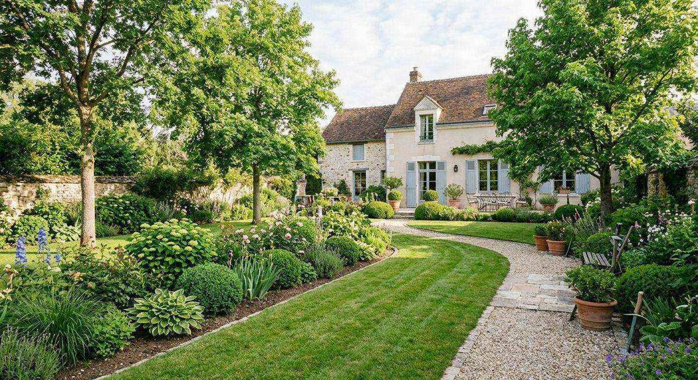
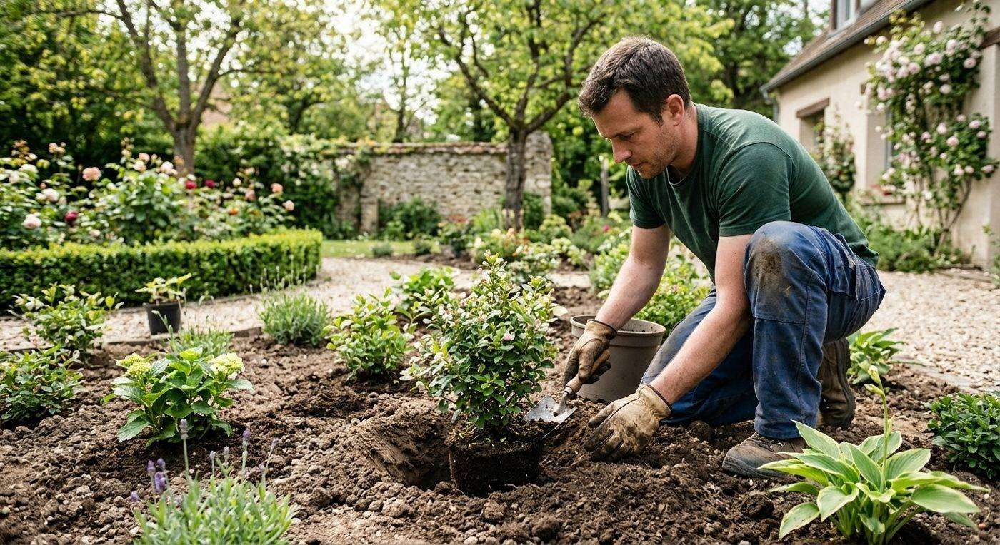
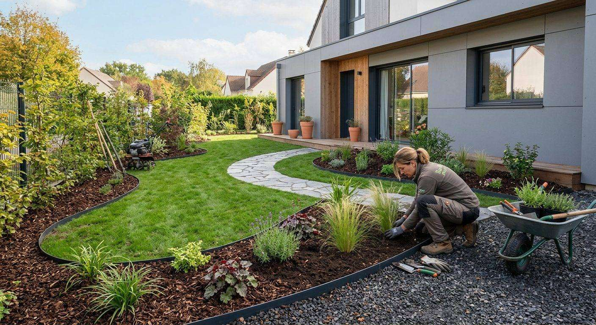

Particuliers
Entretien et création de jardin, après écoute de votre demande lors d’un rendez-vous.
Plus de 25 ans d’expérience dans le domaine du paysage, au service des particuliers, des syndics et des entreprises.




La société Brossard Fils reste et restera une entreprise familiale à échelle humaine. Bernard Brossard (père) a créé son entreprise il y a presque 30 ans.
Fils d’horticulteur de père en fils, il a transmis la passion du jardin d’agrément et la curiosité des végétaux : couleurs, parfums, formes. Jérémie, après dix ans à ses côtés, puis son frère Charles, ont décidé de suivre son exemple.
Notre expérience et notre rigueur à la disposition de chacun.
Nous nous déplaçons dans l’Essonne et parfois dans l’ensemble de l’Île-de-France.
Nous réalisons l’entretien (tonte, taille, nettoyage, bêchage), la création de parcs et de jardins (plantation, nivellement de terrain, engazonnement) et des rocailles.
Notre priorité : la satisfaction de nos clients, avec le respect de nos engagements.